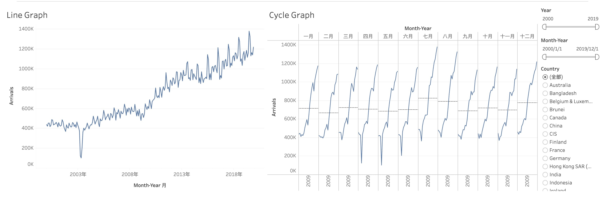
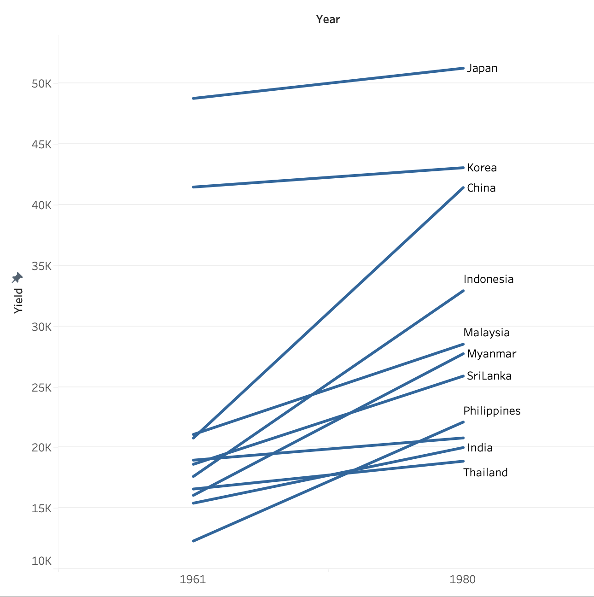
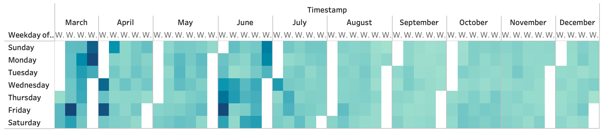
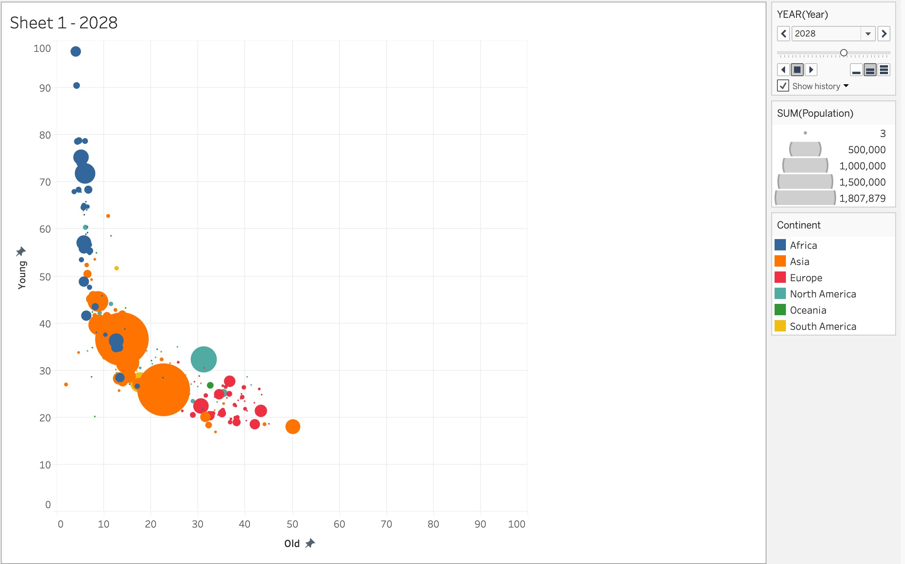

In-Class Exercise 6
in-class exercise
Various types of visualization of time-series data using Tableau Desktop.
1. Line Graph and Cycle Graph
The first visualization displays the monthly tourist arrivals across years; the second visualization displays the cycle graph which can show the peak seasons in a year.

1.1. Steps for cycle graph
- Columns: MONTH(Month-Year) | YEAR (Month-Year)
- Rows: SUM(Arrivals)
- Filters: Month-Year (range of dates) | Country (radio button) | Year (change to numerical)
- Average line: y-xis -> Add reference lines
2. Slope Graph
The visualization shows the change in rice yield of multiple country from Year 1961 to Year 1980.

1.1. Steps for slope graph
- Columns: Year
- Rows: Sum(Yield)
- Label and Detail: Country
- Filter: Year (convert to discrete; select only 1961 and 1980)
3. Calendar Heatmap
The calendar heatmap shows the frequency of network intrusion across different weeks and days of week.

3.1 Steps for calendar heatmap
- Columns: MONTH(Timestamp) | WEEK (Timestamp)
- Rows: WEEKDAY(Timestamp)
- Color: CNT (eventlog.csv)
4. Bubble Plot to show trend over time
The bubble plot shows the young and old population ratio forecasting of different countries.

4.1 Steps for bubble plot with animation
Columns: SUM(Old)
Rows: SUM(Young)
Color: Continent
Size: SUM(Population)
Detail, Label: Country
Pages: YEAR(Year)